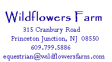

|
|
|
Wildflowers Farm offers quality riding lessons, boarding, and training at a reasonable price, in a quiet, casual family-oriented atmosphere. Located in beautiful Princeton Junction, New Jersey, on 28-plus acres of land, Wildflowers Farm provides an escape from the everyday. Our farm specializes in Hunter Seat Equitation, Jumping, and Dressage. Miles of trails, a 1/4 mile track, a lighted outdoor jumping ring and dressage ring, and our new Morton 72' x 160' Indoor Riding Arena allow for plenty of riding space. We welcome you and your equine family member to join our family here at Wildflowers Farm. For further information, please call or send us an e-mail ... or find us on Facebook. We look forward to hearing from you!
|
|
|  |
© 2002 - 2014 Wildflowers Farm. All rights reserved.
Site developed by Thirsty Boots, dang it!